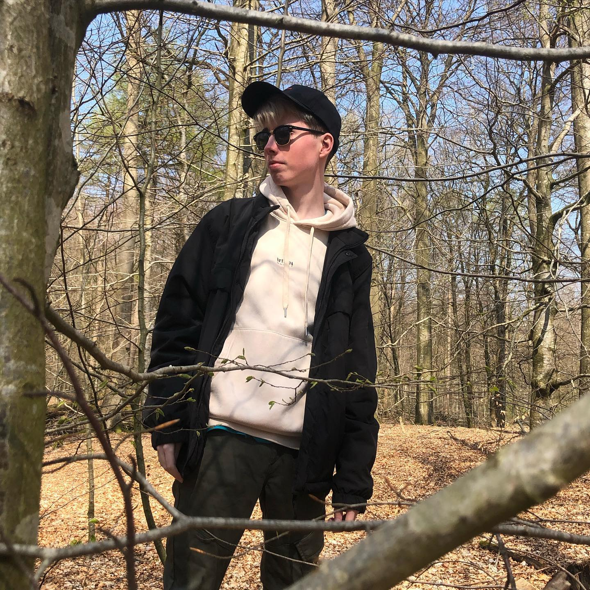

Meine Nicknames sind:
Lou, LouGon, Louis, Lougonnafight,
thanekogun, thaneko
Ich habe am 25.08 Geburtstag
Ich wohne in Schleswig-Holstein, würde aber gerne eines Tages nach Baden-Württemberg ziehen
Ich bin ganze 1,78m groß :OOOO
Ich hab Grün-Blaue Augen aber laut einem Freund wechsel ich jeden Tag zwischen den beiden Farben
Ich LIEBE Magenta und Grün!!
🐊 🦊 🐈 🐺
Mein Lieblingsalbum ist
Goodbye Despair
von
mika*mioda